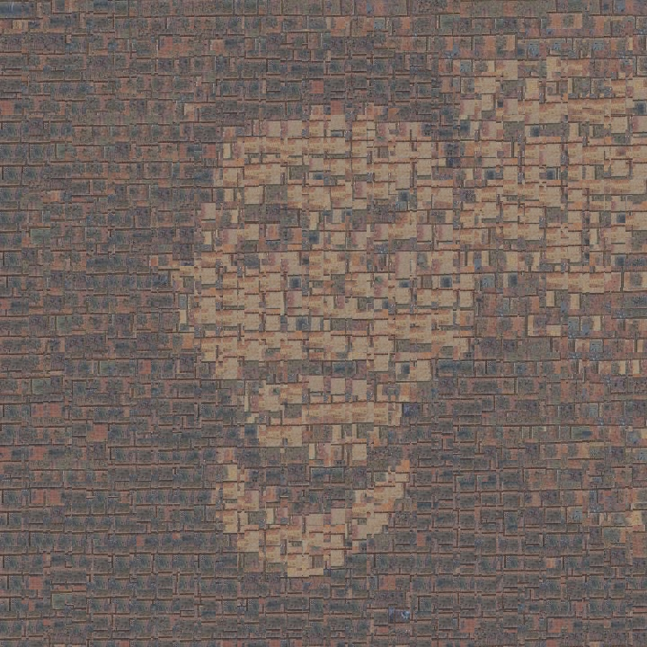
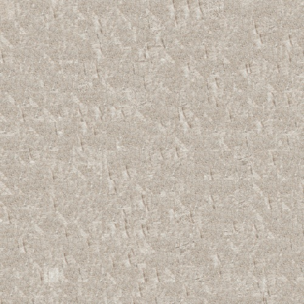
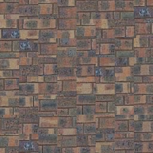
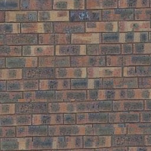
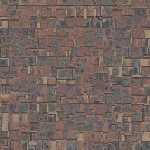
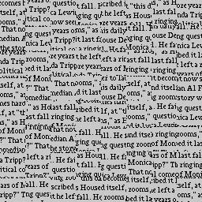
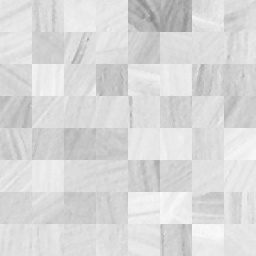
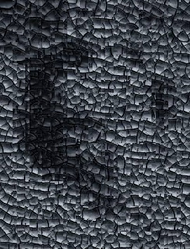
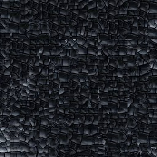

Notre approche repose sur la synthèse d’images en réutilisant des petits blocs extraits d’une texture d’exemple. On commence avec quilt_random,
qui place des blocs au hasard sans s’occuper des transitions. Le résultat est rapide, mais souvent incohérent visuellement. Pour améliorer ça, quilt_simple
ajoute du chevauchement entre les blocs et choisit ceux qui s’adaptent le mieux à ce qu’il y a déjà, en comparant les zones superposées. Ensuite, quilt_cut va encore
plus loin en trouvant un chemin de fusion optimal dans la zone de chevauchement, grâce à la fonction cut qui minimise les différences entre les blocs.
Finalement, texture_transfer permet de guider la texture en s’inspirant d’une image cible. En plus de minimiser les différences entre les blocs,
cette fonction tient compte de la ressemblance avec l’image cible grâce à un paramètre alpha qui équilibre entre la continuité et la fidélité au contenu.
Chaque étape rend le résultat visuellement plus cohérent et permet de mieux contrôler l’apparence finale.
Comme on peut voir, certains résultats ont fonctionné beaucoup mieux que d'autres. Probablement dû à des mauvaises valeurs utilisées,
la définition de l'image de base dans la texture est plus visible sur certaines photos que d'autres.
Transfert de texture efficace









Même si l’approche fonctionne bien dans l’ensemble, on a remarqué que certaines combinaisons de textures et d’images cibles donnent de bien meilleurs résultats que d’autres.
Par exemple, les visages comme ceux de me.jpg ou feynman.tiff ont bien fusionné avec des textures structurées comme bricks_small.jpg ou texture1.jpg, donnant des résultats visuellement cohérents.
En revanche, les images de kobe.jpg, muhammad_ali.jpg et sketch.tiff ont posé plus de problèmes. Ces images contiennent peut-être trop de détails, ce qui rend la fusion plus difficile.
Côté code, une amélioration possible serait d’adapter automatiquement le paramètre alpha selon la complexité visuelle de la texture ou de l’image cible, ou encore d’ajouter un post-traitement
pour lisser les bords. Le système de sélection de blocs pourrait aussi tenir compte de plus de contexte pour mieux aligner les motifs. Malgré ces limites, le système fonctionne
bien dans plusieurs cas et montre que de bons résultats sont possibles avec les bons paramètres et textures.